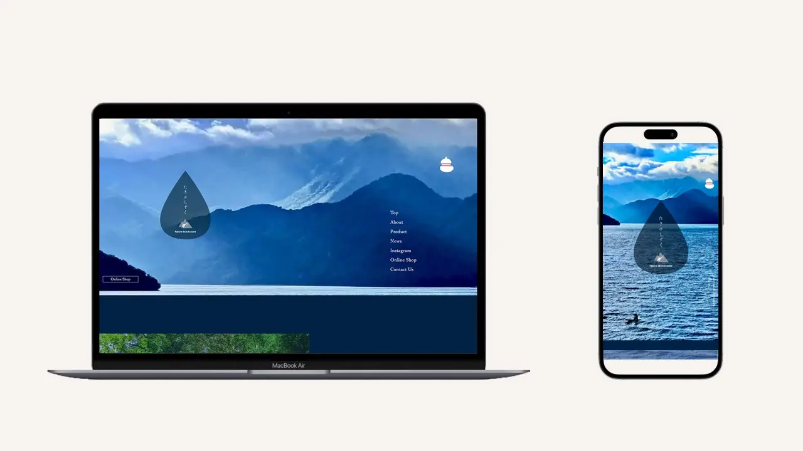

- 制作時間
- 30時間
- 制作ツール
- VS Code/Photoshop/Illustrator/Figma
- 使用言語
- HTML/CSS/Javascript/jQuery
- 担当作業
- 要件定義/カメラマン(画像/動画)/提案資料作成/ライティング/ワイヤー作成/カンプ作成/コーディング
オリジナルサイト制作 #1
- 架空の日本酒の発売に合わせて、ブランドイメージを伝えるＷｅｂサイトを企画
- 世界観に合わせたメインビジュアル、動画の撮影、ライティング、カンプ制作、コーディング
- ペルソナ設定を行い、ターゲット層に合わせた商品イメージ、ラベルデザイン、紙袋等、ビジュアル面の販促提案